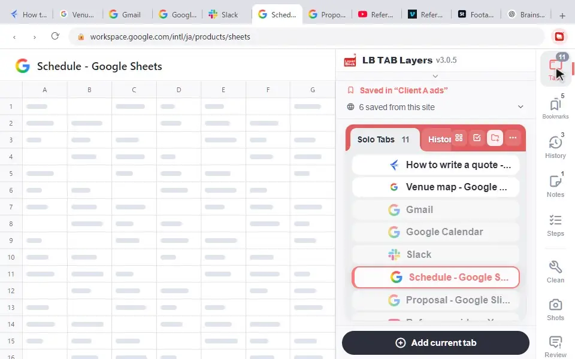

To get the same bookmarks on two computers, sign in to Chrome with the same Google Account on both and make sure Bookmarks is one of the things saved to your account (Settings → You and Google → your account name). Bookmarks you made before signing in may stay on that computer only until you choose to save them to your account. Because LB TAB Layers keeps your groups as ordinary Chrome bookmark folders, your groups and the pages in them travel the same way. Notes, Steps and settings kept inside the extension do not; move those with Export (JSON) and Import (JSON).
You save a page at the office, sit down at your laptop in the evening, and it isn’t there. Chrome can keep your bookmarks the same on every computer, but only when a few settings line up. This guide covers how it works, how to set it up, what to check when it doesn’t work, and what happens to your saved tab groups if you use LB TAB Layers.
How Chrome bookmark sync works
Chrome itself does the syncing. When you sign in to Chrome with a Google Account, new bookmarks are saved in that account, and every other computer (and phone) signed in to Chrome with the same account gets them too. Changes go both ways: add, rename, move or delete a bookmark on one computer and the others follow, usually within a few seconds to a few minutes once they are online.
Three things matter:
- The same Google Account on every computer, signed in to Chrome (not just to Gmail in a tab).
- Bookmarks turned on in the list of what Chrome saves to your account.
- The same Chrome profile. Each Chrome profile has its own bookmarks, so a work profile and a personal profile never share them.
Google also notes a limit of about 100,000 bookmarks per account. Few people get near it, but very large imported collections can.
Set it up, step by step
Google has changed these screens several times. Older versions of Chrome say Turn on sync; recent versions simply ask you to sign in to Chrome and then let you choose what to save. The labels below follow Google’s current help pages, so your version may word them a little differently.
- Sign in to Chrome. Click your profile picture at the top right of Chrome and choose Sign in to Chrome, then enter your Google Account details. If you see Turn on sync instead, use that.
- Check that bookmarks are included. Open the Chrome menu (⋮) → Settings → You and Google and select your account name. Make sure Bookmarks is on in the list of what is saved to your account. (In older versions: Sync and Google services → Manage what you sync.)
- Save bookmarks that are only on this computer. Bookmarks you made while signed out may be kept on the device only. If the profile menu offers something like Save x items in Account, use it to move them into your account.
- Repeat on the other computer with the same Google Account, then give it a minute. Open the bookmark manager (Ctrl+Shift+O, or ⌘+Option+B on a Mac) to check.
💡 If you don’t want to sign in on a computer (a shared or locked-down work machine, for example), you can still copy bookmarks by hand: in the bookmark manager, use ⋮ → Export bookmarks to save an HTML file, and Import bookmarks on the other computer. This is a one-time copy, not a sync.
When bookmarks don’t sync: what to check
| What you see | Likely cause | What to do |
|---|---|---|
| Nothing from the other computer shows up | Different Google Account, or signed in to a website but not to Chrome | Click your profile picture and check the account shown there on both computers. |
| Some old bookmarks are missing on the other computer | They were made while signed out and are saved on that device only | On the computer that has them, look for the option to save local items to your account. |
| Bookmarks sync, but not the ones you expected | You are in a different Chrome profile | Check the profile picture. Each profile has its own bookmarks. |
| Chrome asks for a passphrase or shows a sync error | A sync passphrase was set, or you need to sign in again | Enter the passphrase on this computer, or sign out and back in. A very old Chrome version can also cause trouble, so update Chrome. |
| The same bookmarks appear twice | Local bookmarks and account bookmarks were merged, or a backup was imported on top | Clean them up once in the bookmark manager. The change will then sync everywhere. |
| Changes appear late | The other computer was offline or asleep | Bring it online and open Chrome. It catches up on its own. |
One warning: because sync works both ways, deleting a bookmark on one computer deletes it everywhere. Sync is not a backup. If your bookmarks matter, export them to an HTML file from time to time.
Synced bookmarks and your saved tab groups
Chrome’s own tab groups are about the tabs you have open now. Bookmarks are what you keep for later. LB TAB Layers connects the two: each group you make is a Chrome bookmark folder, kept inside a folder called LB TAB Layers in your bookmarks, and each saved tab is an ordinary bookmark in it. (If you are curious where that lives on disk, see where Chrome bookmarks are stored.)

That has a useful side effect. Your groups ride on Chrome’s bookmark sync with nothing extra to set up:
- Save tabs to a group on your desktop, and the folder and its bookmarks reach your laptop through Chrome.
- Install LB TAB Layers on the laptop too, open the panel with Alt+T, and it builds your groups from those folders. Hover over a group and click ▶ to open it as a Chrome tab group; ■ closes it again.
- On your phone, the same pages show up as regular bookmarks in Chrome, inside the LB TAB Layers folder.

A few honest details:
- Colors and icons are set per computer. The folder and the pages come across through Chrome, but a group’s color and icon live inside the extension, so a group rebuilt on the second computer may start with a different color. You can change it with “…” → Edit (name, icon, color).
- Sign in first, then open the panel. If you used LB TAB Layers on the second computer before signing in to Chrome, you can end up with two folders named LB TAB Layers in the bookmark manager. Move the group folders into one of them and delete the empty one; the panel will pick up the one that is left.
- Deleting syncs too. When you delete a tab or a group in the panel, it moves to a trash folder inside your bookmarks, and you get 8 seconds to click Undo. Once synced, the deletion reaches your other computers as well.
What Chrome bookmark sync does not carry
Only the bookmark folders and bookmarks travel with Chrome. Data kept inside the extension stays on each computer, including:
- Your Notes and checklists
- Your Steps tasks, their goals and your own templates
- The extension’s settings, such as the theme and layout, and each group’s color and icon
To move these to another computer, open Settings in the panel → Data & Sync → Data Management and click Export (JSON). The file contains your group list (names, colors, icons and saved tabs), your notes, and your Steps tasks, Steps settings and templates. On the other computer, use Import (JSON) in the same place. Two things to know: importing replaces the group list on that computer rather than adding to it, and display settings such as the theme are not in the file, so set those again by hand.
🔒 Saved tabs are Chrome bookmarks, so they stay even if you remove the extension. LB TAB Layers has no account of its own and does not upload your bookmarks anywhere. Syncing is done by Chrome, with your Google Account.
Chrome’s official help
- Get your bookmarks, passwords, and more on all your devices — Google Chrome Help
- Sign in to Chrome — Google Chrome Help
- Import Chrome bookmarks & settings — Google Chrome Help
Frequently asked questions
Q. Do I need to turn on sync to get my bookmarks on another computer?
In recent Chrome versions, signing in to Chrome is enough, as long as Bookmarks is on in the list of what is saved to your Google Account. Older versions call this Turn on sync.
Q. Why are some of my bookmarks missing on my other computer?
They were probably made while you were signed out, so they are saved on that computer only. Save them to your account from the profile menu, or check that both computers use the same Google Account and Chrome profile.
Q. Do LB TAB Layers groups sync between computers?
The groups and the pages in them do, because they are Chrome bookmark folders. Install the extension on the other computer and open the panel, and the groups are rebuilt from those folders. Colors, icons, notes, Steps and settings stay on each computer; use Export (JSON) and Import (JSON) in Settings to move them.
Q. Is bookmark sync a backup?
No. Deletions sync too, so a bookmark you delete on one computer disappears everywhere. Export your bookmarks to an HTML file from the bookmark manager now and then if you want a real backup.
▶ See it in action
Managing bookmarks and tabs together in the sidebar. (The video shows the Japanese UI.)
Your tab groups, on every computer you sign in to.
LB TAB Layers saves tabs by project as Chrome bookmarks, so Chrome sync carries them for you. No account needed · Free plan with 5 groups · Every feature free for 90 days
Add to Chrome — it's free →